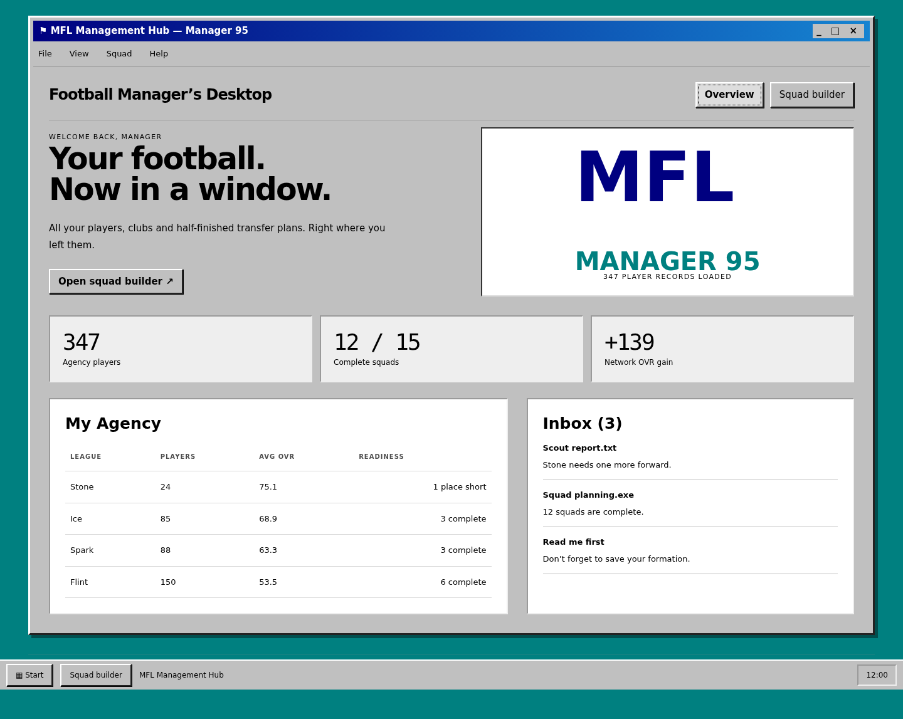
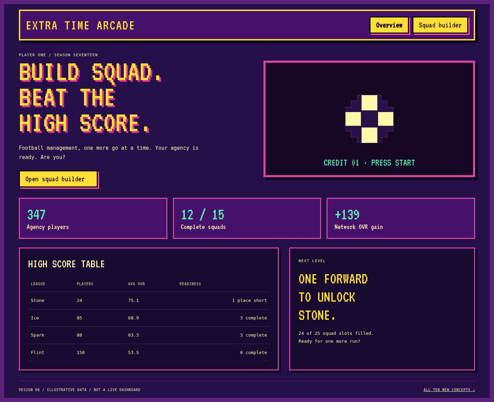
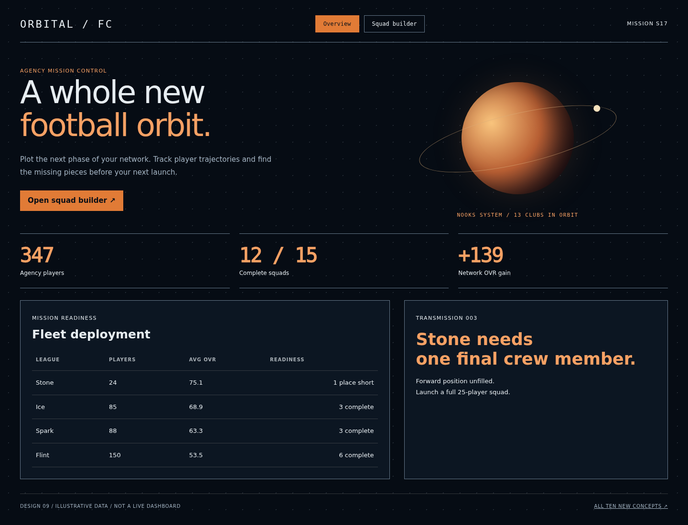
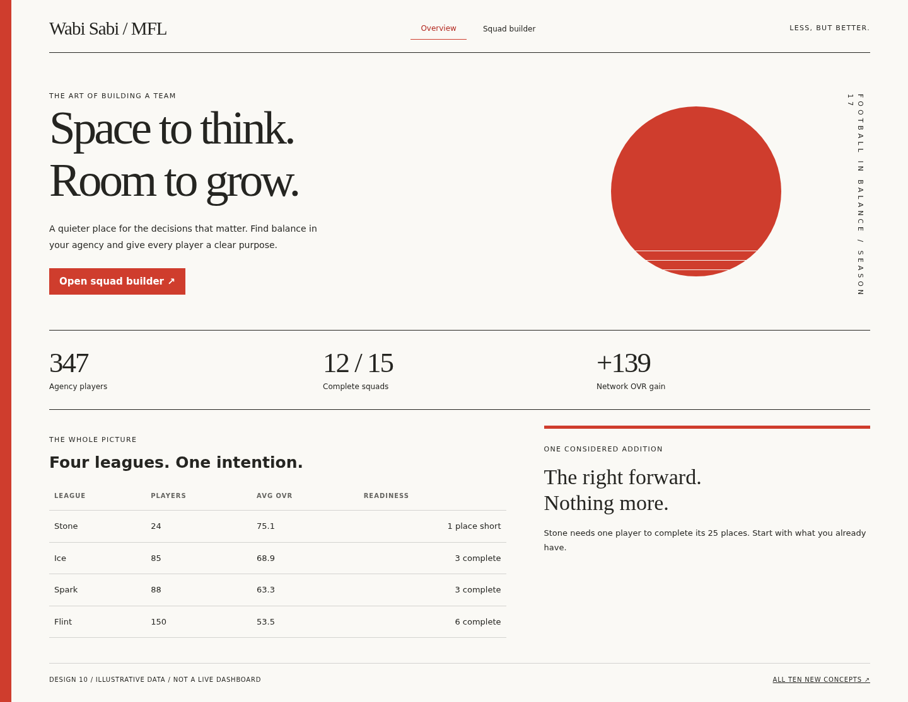
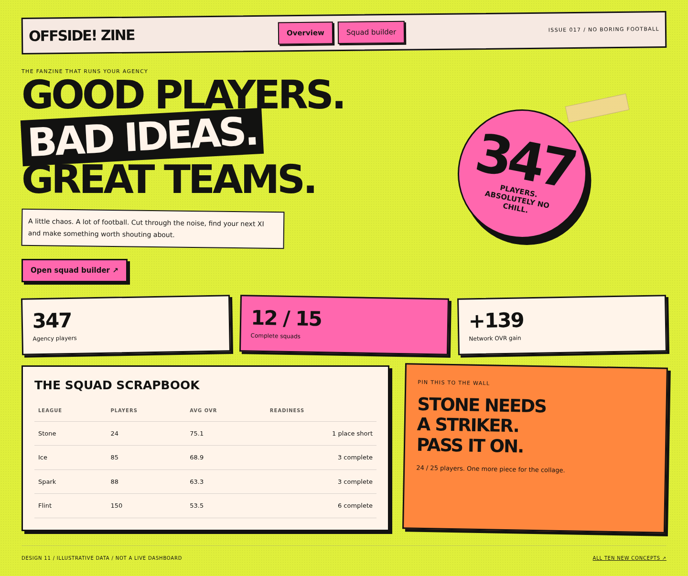
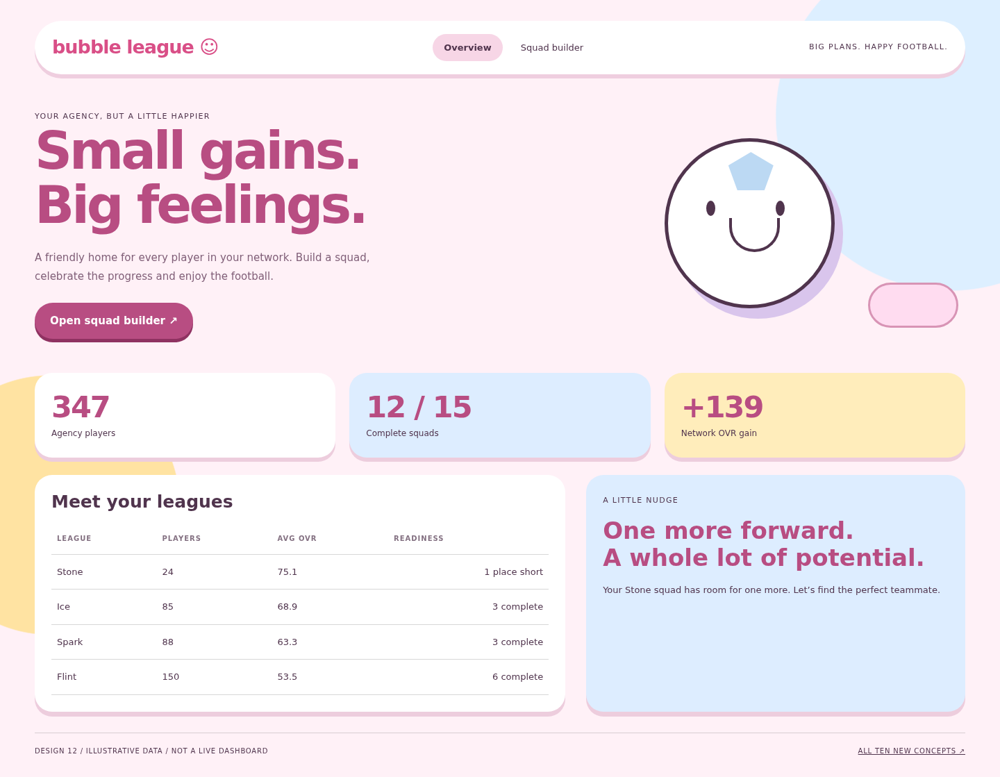
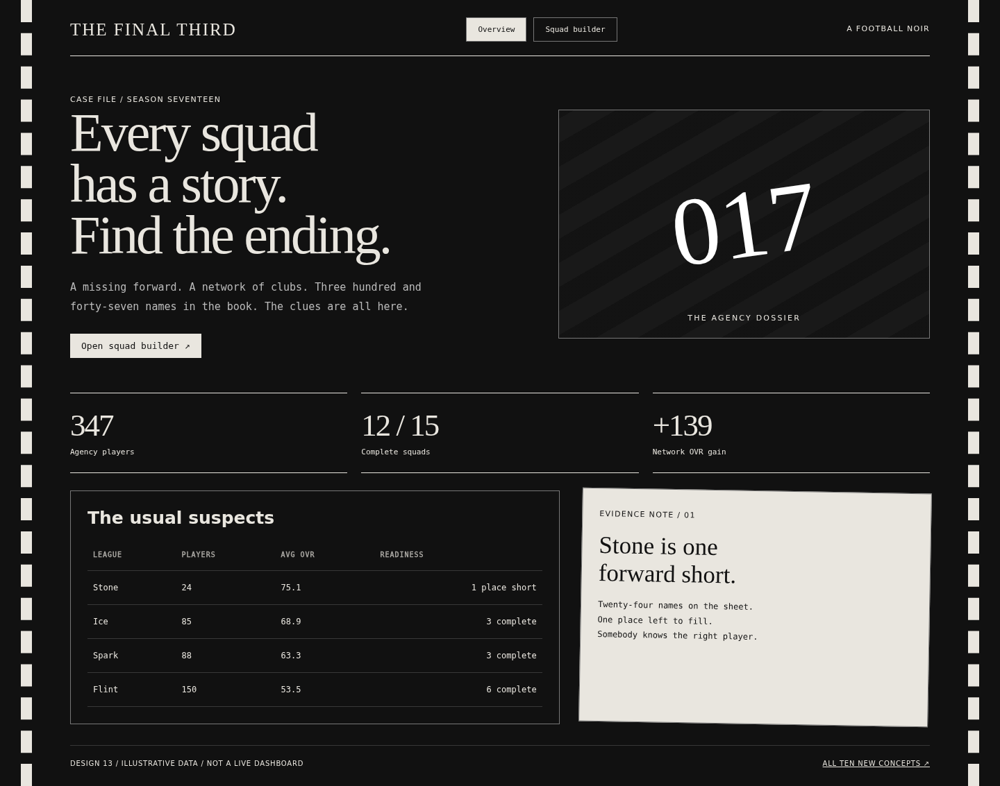
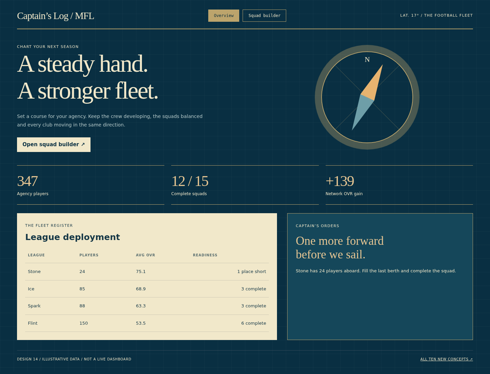
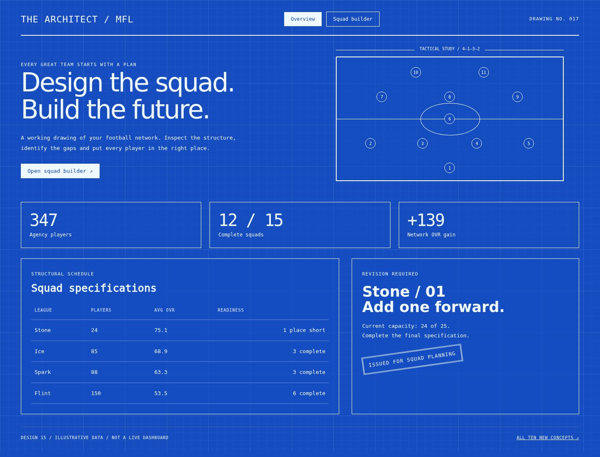
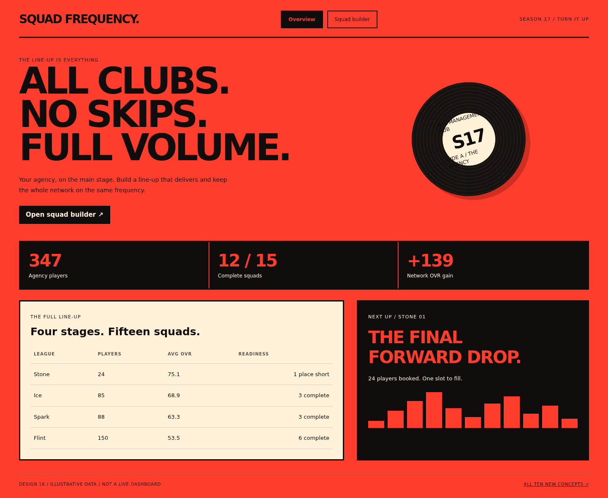

07 / A football desktop from 1995
Manager 95
Grey bevelled windows, teal desktop wallpaper, a Start bar and a manager’s inbox.
Ten new visual directions that go somewhere completely different. A Windows 95 desktop, arcade cabinet, space mission, quiet minimalism, fanzine chaos, bubblegum world, film noir, nautical chart, architectural blueprint and a warehouse party.
Download the ten-theme lookbook ↓
Grey bevelled windows, teal desktop wallpaper, a Start bar and a manager’s inbox.

Purple arcade cabinets, pixel sprites, score counters and a loud yellow marquee.

An orbital mission display with planetary graphics, black space and burnt-orange telemetry.

Vermilion, white space, vertical typography and a restrained asymmetrical composition.

Acid green, pink photocopy blocks, cut-out headlines, tape and deliberately unruly cards.

Candy pink, sky blue, oversized pill shapes and a cheerful illustrated football.

Black and white, cinematic serif headlines, evidence notes and film-strip framing.

Deep ocean blue, cream navigation charts, compass drawings and a captain’s roster.

Engineering blueprints, white linework, dimension markers and a tactical construction plan.

Signal red, black, giant typography, festival line-ups and a static audio-spectrum graphic.